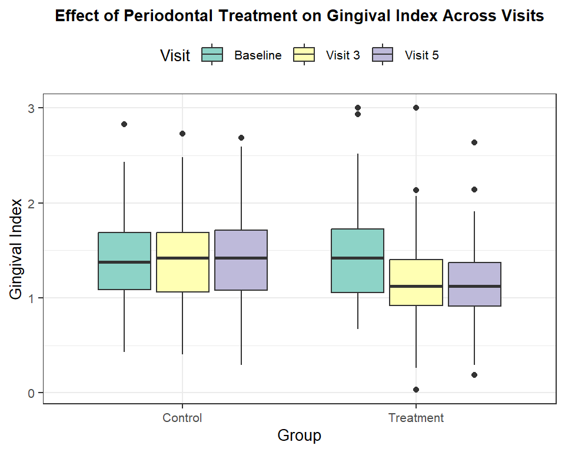
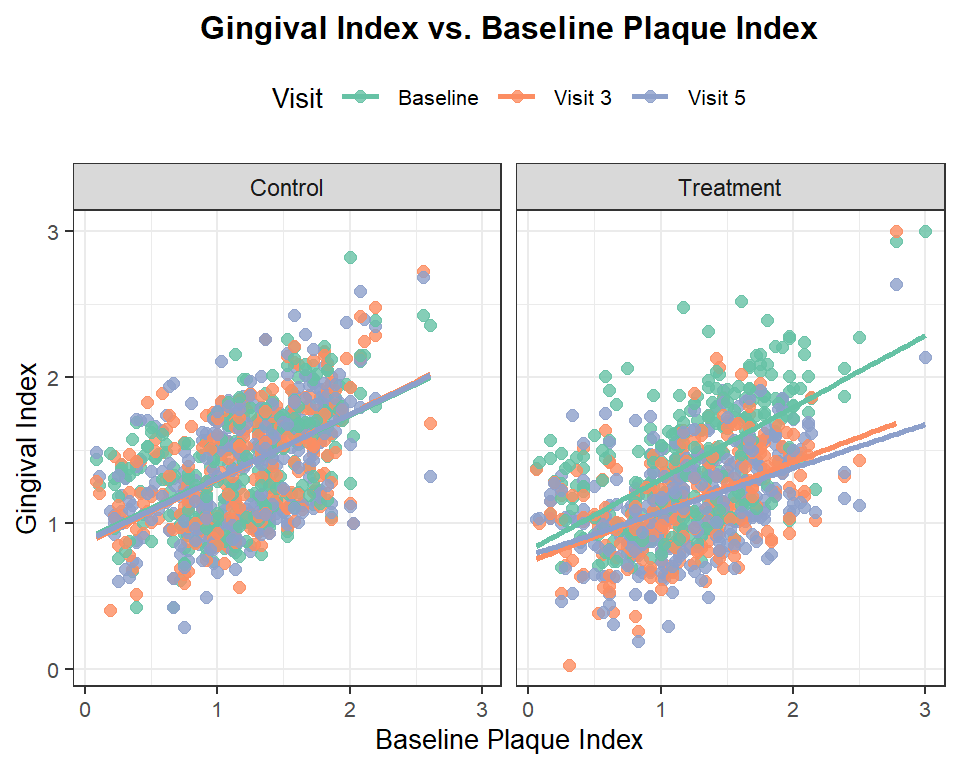
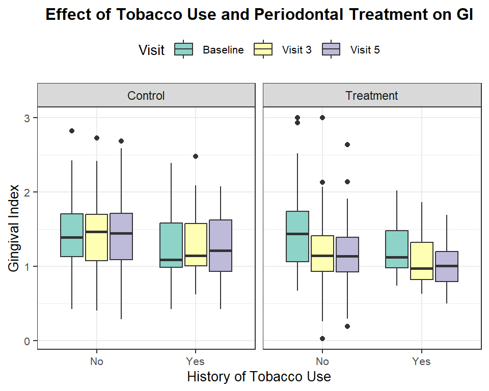

Statistics Final Project
Analysis of the language used in Trump’s Tweets
Introduction
Many pregnant individuals suffer from periodontal disease, a condition primarily caused by an imbalance in the oral microbiome. The oral cavity is a complex ecosystem that harbors over 700 species of bacteria, which form a delicate balance crucial for maintaining oral health (Sedghi, 2021). When this balance is disrupted, it can lead to periodontal disease, characterized by progressive damage to the periodontal complex, including the gums (gingiva) and supporting tissues. This damage results from an inflammatory immune response triggered not only by bacterial imbalance but also by the presence of various viruses and phages in the gingival and periodontal tissues (Sedghi, 2021).
Pregnancy can exacerbate this condition due to hormonal changes that heighten the inflammatory response in the gums, as measured by the gingival index, making pregnant individuals more susceptible to periodontal disease (Wu et al., 2015). Beyond causing discomfort, periodontal disease during pregnancy has been linked to adverse outcomes, such as preterm birth and low birth weight (Michalowicz et al., 2006). While Michalowicz et al. explored the implications of treating periodontal disease during pregnancy - such as its effects on preterm birth and infant health - less is known about how periodontal treatments influence disease progression and what factors may affect treatment efficacy in this specific population.
This study investigates the effects of nonsurgical periodontal treatment on periodontal health over time in pregnant individuals, initiated at 21 weeks of pregnancy. Using the gingival index as a primary measure of inflammation and periodontal health, we aim to understand how baseline oral health, demographic characteristics (e.g., race and age), and lifestyle factors (e.g., tobacco use) affect treatment outcomes. Understanding the relationship between these factors and periodontal health in pregnant women will provide valuable insights into improving oral health and reducing the risk of maternal periodontal disease.
Methods
This study utilized data from a multi-center randomized controlled trial conducted by Michalowicz et al. (2006) to assess the impact of non-surgical periodontal treatment on gingival health in pregnant women. The original study included 823 participants, all between 13-17 weeks of gestation, who were randomly assigned to one of two groups: the treatment group (n = 413) and the control group (n = 410). After removing participants who did not attend visit 5, a total of 639 patients remained in the analysis, with 324 in the control group and 315 in the treatment group. The participants were recruited from four clinics: Hennepin County Medical Center (MN), University of Kentucky, University of Mississippi Medical Center, and Harlem Hospital (NY). Eligibility criteria required participants to have at least 20 natural teeth and the presence of periodontal disease, defined as a probing depth of at least 4 mm and clinical attachment loss of at least 2 mm in at least four teeth, with bleeding on probing in 35% or more of tooth sites. Data were collected at five subsequent clinic visits, with the first visit designated as the baseline for the purposes of this study. Follow-up visits were conducted at gestational ages 17-20 weeks (visit 2), 21-24 weeks (visit 3), 25-28 weeks (visit 4), and 29-32 weeks (visit 5). These visits involved clinical examinations to measure periodontal health, including the gingival index, a key indicator of gingival inflammation (Michalowicz et al., 2006).
Treatment:
Participants in the treatment group received non-surgical periodontal treatment, which included scaling and root planing to remove dental plaque and calculus from the teeth and roots, using ultrasonic and hand instruments with local anesthesia as needed. This treatment was followed by monthly tooth polishing and oral hygiene instruction. Up to four visits for scaling and root planing were allowed, with re-instruction in oral hygiene provided at each visit. The control group received a brief oral examination at each follow-up visit, with periodontal treatment offered only after delivery. Both groups attended the same number of visits, ensuring consistent follow-up. The treatment was designed to improve oral hygiene and reduce periodontal disease, with the expectation that it would lead to improvements in gingival health over the course of pregnancy.
Data Analysis:
To analyze the impact of periodontal treatment on gingival health, we employed a multilevel model with the gingival index as the primary response variable. We measured the gingival index of participant \(i\) at visit \(j\). Visit number is the only level 1 variable and all other variables were measured at level 2. The model includes a random intercept to account for the fact that each participant starts with a unique baseline level of gingival index. By allowing for these individual differences, the model focuses on changes in gingival health over time within each person, rather than being influenced by variations between participants. The gingival index was measured using the Silness-Löe Gingival Index which ranges from 0 to 3, with a lower score representing better dental health. The model accounted for both patient-level factors (such as age, race, tobacco use) and visit-level factors (such as visit number). We also included an interaction term between group and visit number to assess whether the effect of treatment varied over time, which allowed us to determine if the treatment group experienced a greater reduction in gingival inflammation compared to the control group. The primary aim of the analysis was to determine whether non-surgical periodontal treatment reduces gingival inflammation over time and how factors like age, race, and tobacco use influence the progression of periodontal disease.
Results
A total of 639 patients were randomly assigned to two groups: 324 patients in the control group and 315 patients in the treatment group to assess the effectiveness of non-surgical periodontal treatment on periodontal health over five clinical visits and to explore how baseline oral health, race, age and tobacco use influenced treatment outcomes.
Unadjusted Analysis
Effect of Periodontal Treatment on Gingival Health
| metric | Baseline_Control | Visit 3_Control | Visit 5_Control | Baseline_Treatment | Visit 3_Treatment | Visit 5_Treatment |
|---|---|---|---|---|---|---|
| mean_gi | 1.4062994 | 1.3976387 | 1.4031759 | 1.4179397 | 1.1530479 | 1.1477587 |
| sd_gi | 0.3945171 | 0.3960758 | 0.4080209 | 0.4262267 | 0.3500256 | 0.3463688 |
The gingival index served as the primary outcome measure of periodontal health, and the data indicate a notable improvement in the treatment group over time. The patients in the control group maintained a constant mean gingival index from baseline to visit 5 (1.41 vs. 1.40, p = 0.88), indicating no significant change in periodontal health over time. Whereas patients in the treatment group experienced a significant decrease in mean gingival index from baseline to visit 5 (1.42 vs. 1.15, p < 0.001), suggesting improvement in gingival health due to early periodontal treatment. As shown in Table 1 and Figure 1, the treatment group consistently showed a reduction in gingival index across visits, while the control group maintained relatively stable scores. The decrease in the gingival index is prominent by visit 3 in the treatment group, highlighting the effectiveness of periodontal care initiated early in pregnancy.
Relationship between Baseline Plaque Index and Gingival Index

The reduction in gingival index was also related to plaque accumulation. Patients with a higher baseline plaque index also have a higher mean gingival index across all visits, emphasizing the significant role plaque accumulation plays in the progression of periodontal disease. The scatterplot (Figure 2) illustrates a positive correlation between baseline plaque index and gingival index, with the relationship being stronger in the treatment group, which shows a more pronounced reduction in gingival index over time. The treatment group, which showed a marked reduction in gingival index, demonstrates the potential for periodontal care to address both plaque buildup and gingival inflammation effectively.
Patient Demographics and Gingival Health
| metric | Control | Treatment |
|---|---|---|
| mean_age | 25.98 | 26.15 |
| sd_age | 5.52 | 5.64 |
| count | 958.00 | 922.00 |
| race | n_Control | n_Treatment | percent_Control | percent_Treatment | mean_gi_Control | mean_gi_Treatment |
|---|---|---|---|---|---|---|
| Black | 133 | 129 | 0.508 | 0.492 | 1.464015 | 1.507000 |
| Multiple | 17 | 23 | 0.425 | 0.575 | 1.181706 | 1.253696 |
| Native American | 90 | 92 | 0.495 | 0.505 | 1.465733 | 1.379261 |
| White | 84 | 71 | 0.542 | 0.458 | 1.296690 | 1.359451 |
The study also evaluated the influence of demographic characteristics, including age and race, on treatment outcomes. Table 2 shows that the mean age of patients was comparable between the control (25.94 years) and treatment (26.16 years) groups, suggesting no significant age-related bias in group assignment. In terms of race, Table 3 demonstrates that Black patients made up the largest racial group in both the control (n = 133) and treatment (n = 129) groups. Regardless of treatment group, the mean gingival index of Black women is significantly higher than the mean gingival index of White women (1.48 vs. 1.42, p < 0.001) and women of multiple races (1.48 vs. 1.22, p < 0.001). This indicates there may be some racial disparities in regards to access to dental treatment leading up to the study.
| race | mean_gi |
|---|---|
| Black | 1.2696977 |
| Multiple | 0.9500435 |
| Native American | 1.0274783 |
| White | 1.1461127 |
At Visit 5, among women who received treatment, racial differences in gingival index persisted. Black women exhibited a significantly higher mean gingival index (1.27) compared to White patients, who had the next highest mean gingival index (1.15), with this difference being statistically significant (p = 0.012). This indicates that race may continue to play a role in an individual’s gingival index even after periodontal treatment.
Relationship between Tobacco Use and Gingival Health
Tobacco use was another factor examined in relation to gingival health. Figure 3 and Table 5 demonstrates that women with a history of tobacco use had a lower mean gingival index compared to women without a history of tobacco use. At baseline, women with a history of tobacco use have a lower mean gingival index than women who don’t use tobacco (1.25 vs. 1.42, p = 0.001). This difference is also apparent in the treatment group by visit, where we can see that tobacco users always have a lower median gingival index for women in the treatment group. However, it is important to note that only 66 women reported a history of tobacco use which may have an effect on the results. Regardless of tobacco use, women in the treatment group showed a reduction in their gingival index, reinforcing the effectiveness of early periodontal intervention.
| metric | No_Control | No_Treatment | Yes_Control | Yes_Treatment |
|---|---|---|---|---|
| mean_gi | 1.4209965 | 1.4390669 | 1.2849429 | 1.2243871 |
| sd_gi | 0.3845743 | 0.4293353 | 0.4569916 | 0.3459759 |
| n | 289.0000000 | 284.0000000 | 35.0000000 | 31.0000000 |
Women with a history of tobacco use have a lower gingival index, indicating better periodontal health. Furthermore, the gingival index decreases for mothers whose periodontal treatment began before 21 weeks of gestation compared to those treated after delivery, regardless of their tobacco use history. Further highlighting the importance of periodontal treatment. The data was collected from 823 pregnant women throughout 5 visits from multiple centers in a randomized controlled trial.

Adjusted Analysis
The multilevel model identified key predictors of gingival index. Baseline plaque index was the strongest predictor, with each point increase in baseline plaque index corresponding to a 0.39 point increase in gingival index after accounting for the other variables (estimate: 0.391; 95% CI: [0.343, 0.438], t = 16.127). The interaction between visit number and treatment group was also significant, with women in the treatment group expected to have a gingival index 0.27 points lower than those in the control group by visit 5 (estimate: -0.267; 95% CI: [-0.306, -0.228], t = -13.421). Race was also a significant predictor. Black women had higher expected gingival index scores compared to women of other racial backgrounds. Specifically, Black women are expected to have a gingival index 0.11 points higher than White women (t = -3.746), 0.21 points higher than Native American women (t = -7.786), and 0.27 points higher than women of multiple races (t = -5.734), after adjusting for other variables. These findings suggest that race is an important factor influencing periodontal health. Age and number of qualifying teeth had minimal influence on predicting gingival index as shown by the small t values and confidence intervals near zero.
Discussion
The results of this study provide strong evidence that non-surgical periodontal treatment has a significant positive effect on gingival health in pregnant women, particularly when treatment is initiated before 21 weeks of gestation. The analysis of the gingival index across multiple visits reveals a marked reduction in gingival inflammation for women in the treatment group, with the mean gingival index decreasing from baseline (1.42) to visit 5 (1.15). This reduction contrasts with the control group, where the gingival index remained consistent (~1.40) throughout the study (Table 1). These findings align with Michalowicz et al. (2006), which showed that treatment of periodontal disease leads to improvements in gingival health in pregnant women. However, while Michalowicz et al. focused on the broader outcomes of periodontal treatment, such as preterm birth and infant health, our study contributes uniquely by investigating how demographic factors (e.g., race, age) and lifestyle habits (e.g., tobacco use) influence treatment outcomes over multiple clinical visits.
Our study emphasizes the significant role of baseline plaque index in predicting changes in gingival health. As Wu et al. (2015) note, gingival inflammation associated with pregnancy is initiated by dental plaque and exacerbated by endogenous steroid hormones. The strong relationship between baseline plaque index and the gingival index in our study highlights the importance of oral hygiene and plaque control in managing periodontal disease. Higher plaque levels were consistently associated with higher gingival indices across visits, suggesting that maintaining good oral hygiene may be crucial in reducing the progression of periodontal disease. However, as Wu et al. (2015) also suggest, in order to isolate the impact of pregnancy on periodontal health, it is essential to exclude the effects of previously existing gingival inflammation and plaque. This presents a limitation in our study, as data collection began after 21 weeks of gestation, when treatment had already been initiated. Therefore, baseline plaque accumulation could potentially confound the observed effects of pregnancy on periodontal health, warranting further investigation into the independent influence of pregnancy on gingival inflammation.
We observed consistent results across different races and age groups, with the treatment group showing a decrease in gingival index over the 5 visits. Even though we would expect age to be an important predictor of periodontal health, as periodontal health tends to decline with age, it was not as significant in our model. This could be due to the relatively narrow age range of our participants, with ages spanning from 16 to 44 and a mean age of 25 in the control group and 26 in the treatment group. Furthermore, despite controlling for baseline variables, Black patients in our study had higher gingival indices compared to other racial groups, even at visit 5. This suggests that race may play a significant role in periodontal health outcomes, even after treatment. The persistence of these differences highlights the potential influence of systemic factors such as access to dental care, socioeconomic status, and broader health disparities. Future studies should investigate these disparities to identify targeted interventions and address inequities in periodontal health among pregnant individuals.
Interestingly, women with a history of tobacco use had a lower gingival index compared to women without a history of tobacco use, both in the control and treatment groups. This result is somewhat counterintuitive, as tobacco use is typically associated with worse periodontal health. However, as depicted in the boxplot in Figure 3, the control group showed a more pronounced difference between tobacco users and non-users, whereas the treatment group exhibited less variability in gingival index across tobacco use history. Regardless of tobacco use, treatment still led to a significant reduction in gingival index scores. This further emphasizes the effectiveness of early periodontal care in improving gingival health, even in the presence of confounding factors such as tobacco use. However, this result should be interpreted with caution due to the small sample size of women reporting tobacco use (66 users vs. 573 non-users). This unequal distribution of tobacco use likely influenced the outcome, and further research with a larger sample of tobacco users is needed to draw stronger conclusions.
The randomized controlled trial design strengthens the ability to make causal claims about the impact of periodontal treatment on gingival health. Random assignment minimizes biases and ensures that confounding variables, such as age, race, and tobacco use, are distributed evenly, increasing confidence that observed changes in gingival health are due to the treatment. However, the self-reported nature for some variables such as tobacco use and race, could introduce potential bias. Furthermore, the study also had some missing values and instances where participants did not attend visit 3, potentially affecting the robustness of the results.
These findings have important implications for public health, particularly in prenatal care. The results underscore the need for integrating periodontal care into routine prenatal health management. Given the significant impact of periodontal disease on maternal health, early intervention with non-surgical periodontal treatment should be considered as part of comprehensive prenatal care. Public health policies could focus on increasing awareness among healthcare providers and pregnant women about the importance of oral health during pregnancy. Additionally, the observed differences in gingival health across racial groups, particularly among Black patients, highlight the need to address potential health disparities in periodontal care. Racial and ethnic differences in access to dental care, socioeconomic status, and cultural attitudes toward oral health may contribute to these disparities. As such, future public health strategies should aim to ensure equitable access to periodontal treatment for pregnant women, particularly those from historically underserved communities.
Regarding generalizability, while our study focused on pregnant women receiving periodontal care from multiple clinics, including Hennepin County Medical Center (MN), University of Kentucky, University of Mississippi Medical Center, and other diverse healthcare settings, the findings are particularly relevant to populations with varied racial and ethnic backgrounds. The ethnic composition of the participating clinics’ service areas reflects a broad demographic, which enhances the external validity of our study. However, the generalizability of our findings is limited by the fact that participants were referred by their healthcare providers (Michalowicz et al., 2006), which may have resulted in selection bias toward those already receiving prenatal care and periodontal treatment. Additionally, many of the variables included in the study, such as tobacco use, were self-reported, which could introduce recall bias or inaccuracies. Therefore, while the results may be relevant to similar populations, further studies should consider these limitations to ensure findings are applicable to a wider range of pregnant women.
Moreover, future research should explore the independent effects of pregnancy on gingival health and examine whether baseline plaque accumulation acts as a confounding factor. It is also critical to examine how social determinants of health, including race and access to care, influence periodontal health outcomes during pregnancy, ensuring that policies and interventions are inclusive and address the unique needs of diverse populations.
Conclusion
The observed reduction in gingival inflammation across multiple visits highlights the importance of early intervention in managing periodontal disease during pregnancy. Initiating non-surgical periodontal treatment before 21 weeks of gestation has proven to be effective in improving gingival health, with significant reductions in inflammation over time. Factors such as baseline plaque accumulation, race, and tobacco use influenced treatment outcomes. Notably, Black women exhibited higher levels of gingival inflammation compared to other racial groups, indicating that race plays an important role in periodontal health outcomes. This difference, even after treatment, suggests that racial disparities in access to dental care or other systemic factors may contribute to the observed variations in gingival health. These disparities are worth exploring further to identify targeted interventions and improve care.
These findings underscore the need to incorporate periodontal care into routine prenatal health management. Early treatment can reduce the risk of adverse pregnancy outcomes and improve maternal health. Additionally, addressing racial disparities in access to dental care is crucial for ensuring equitable health outcomes. It’s clear that while dental health and lifestyle choices play a significant role in a patient’s gingival index, race is also a very important. Furthermore, future research should explore the independent effects of pregnancy on gingival health and the broader social determinants influencing periodontal disease, with a focus on creating inclusive public health policies that cater to diverse populations.
Appendix - Multilevel Model Results
References
Michalowicz, B. S., Hodges, J. S., DiAngelis, A. J., Lupo, V. R., Novak, M. J., Ferguson, J. E., Buchanan, W., Bofill, J., Papapanou, P. N., Mitchell, D. A., Matseoane, S., & Tschida, P. A. (2006). Treatment of periodontal disease and the risk of preterm birth. New England Journal of Medicine, 355(18), 1885–1894. https://doi.org/10.1056/nejmoa062249
Sedghi, L. M., Bacino, M., & Kapila, Y. L. (2021). Periodontal disease: The good, the bad, and the unknown. Frontiers in Cellular and Infection Microbiology, 11. https://doi.org/10.3389/fcimb.2021.766944
Wu, M., Chen, S.-W., & Jiang, S.-Y. (2015). Relationship between gingival inflammation and pregnancy. Mediators of inflammation. https://pmc.ncbi.nlm.nih.gov/articles/PMC4385665/